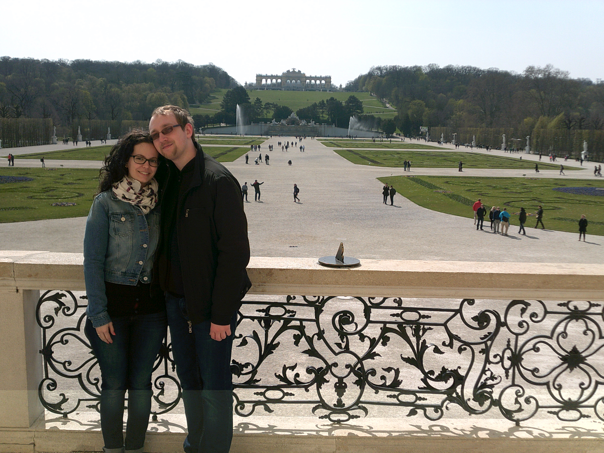
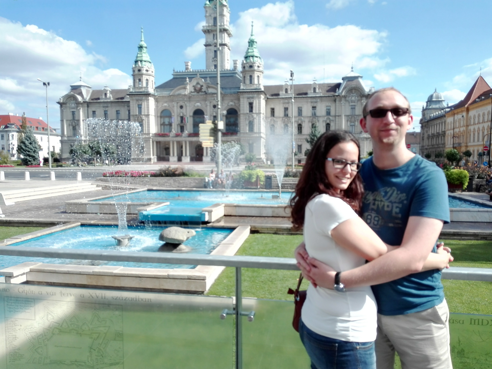
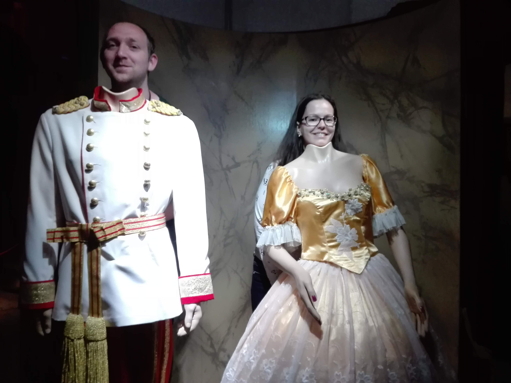
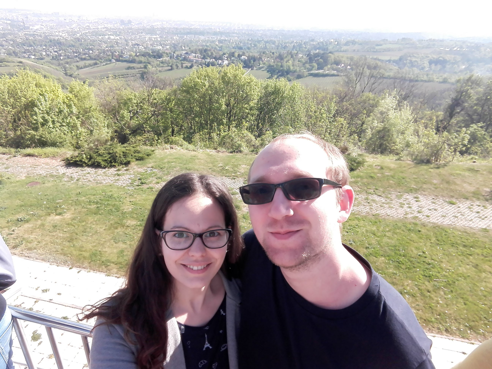

Az első közös képünk
Azért egy jó dolog volt a szakkoliban.
Bazilika kupolája
Közvetlenül mellettem látható a panoráma legszebb része.

Bécs
A birodalom fővárosa egy nem olyan messzi-messzi galaxisban

Fenyves
Balatonra jó lesz
Fenyves
Ez is...

Győr
Így egyikünknek se nagy a hasa legalább...

Athén 1.
Színház az egész világ

Athén 2.
Ezen majd photoshoppolni kell, mert nagy a hasam
Mellesleg mögöttünk a Kariatidák.

Bécs 2.0 - Time Travel
Sissi és Ferencz József kicsit másképp...

Bécs 2.0 - Kahlenberg
Visszafelé elég kalandos lett az utunk.